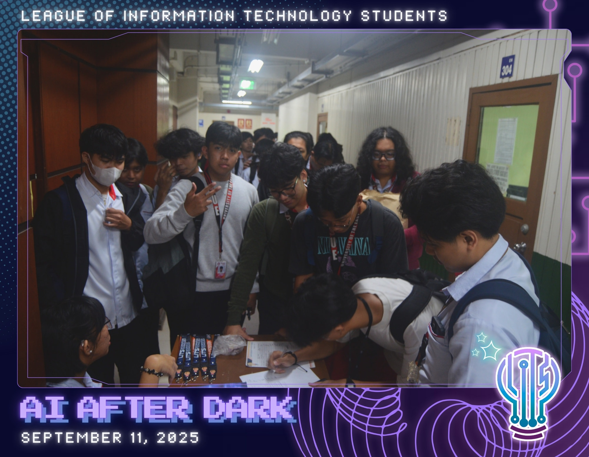
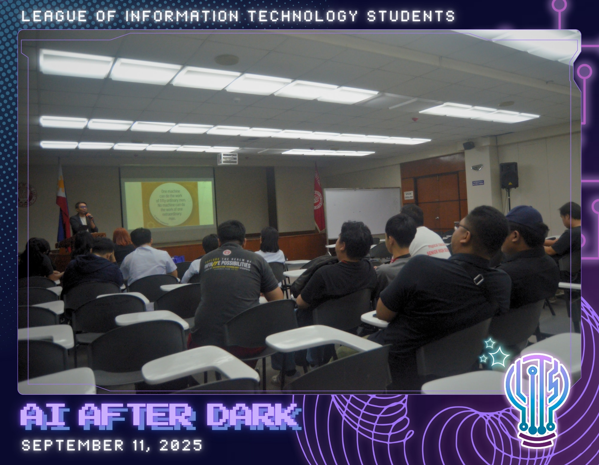
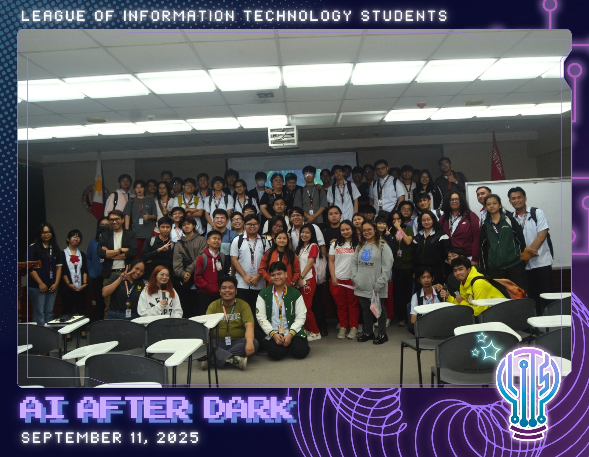

AI AFTER DARK

What is AI, really — and who decides what it becomes? AI After Dark: Exploring Ethical Tech Frontiers was a seminar built around one of the most pressing questions of our time: as artificial intelligence grows more powerful, how do we make sure it grows more responsible?
On September 11, 2025, LITS brought students into a three-hour conversation that was part lecture, part dialogue, and entirely eye-opening. The room at MPH 1 was packed with IT students who came curious and left challenged — challenged to think harder about the technology they're learning to build.
THE SPEAKER
WHAT WAS COVERED
THE REFLECTION
Progress holds no value unless it builds a future where everyone belongs. That line from Sir Jherod's talk stayed with attendees long after the seminar ended — a reminder that the most sophisticated AI system in the world is only as good as the values embedded in the people who build it.
"AI is not just about what it can do today, but about the future we choose to shape with it."
— Post-event reflection, #AIAfterDark
The future of technology depends on the choices we make today. Every dataset chosen, every model trained, every deployment decision — these are not just technical choices, they are ethical ones. The students in that room left with a deeper sense of responsibility, and that is exactly what LITS events are built to do.
PHOTO GALLERY

🌙
🤖
💡